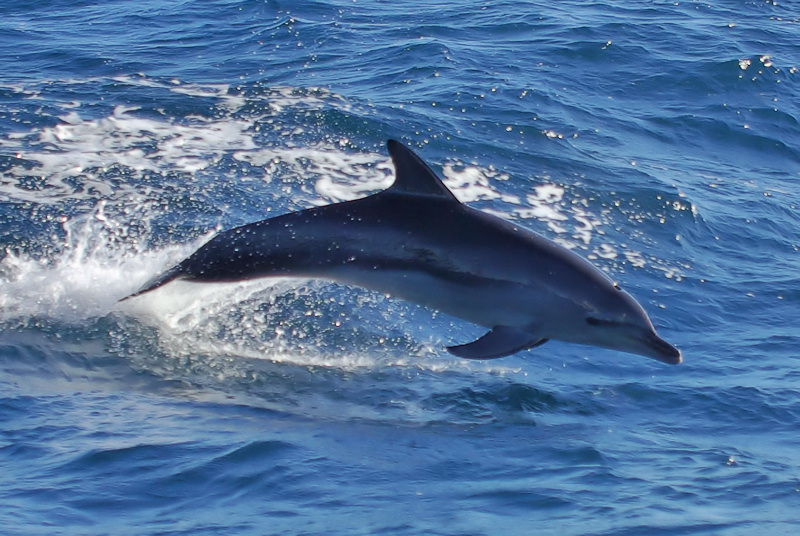
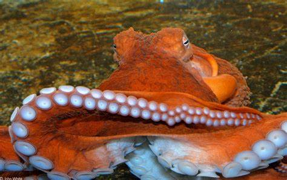

Beneath the Surface: Discovering the Underwater World
Fish
Clownfish (Amphiprioninae)
Clownfish, with their vibrant colors and symbiotic relationship with sea anemones, are iconic inhabitants of coral reefs.
They live in coral reefs throughout the Indo-Pacific region, seeking shelter and protection among sea anemones.
Some facts on Clown Fishes is that they in mutualistic relationship with sea anemones, known for unique behaviors and social structures within their anemone homes.
Tuna (Family Scombridae)
Tunas are fast-swimming fish found in oceans worldwide, known for their streamlined bodies and powerful swimming abilities.
They live in open ocean habitats, where they roam in search of prey such as smaller fish and squid.
Some facts on Tunas is htat they are highly migratory species, important for fisheries and a top predator in marine food chains.
Angelfish (Family Pomacanthidae)
Angelfish are colorful reef fish with distinctively shaped bodies and fin structures, often found in tropical coral reef habitats.
They live in coral reefs and rocky areas in tropical and subtropical waters, where they feed on algae and small invertebrates.
Some facts on them is that they are diverse species with unique color patterns and behaviors, popular in marine aquariums.
Sharks (Order Selachimorpha)
Sharks are iconic apex predators of the oceans, with diverse species ranging from the massive great white shark to the elusive hammerhead.
They are found in all types of marine environments, from coastal shallows to deep-sea waters, depending on the species.
The fact that they are important for marine ecosystems as top predators, facing conservation challenges due to overfishing and habitat loss.
Moray Eel (Family Muraenidae)
Moray eels are elongated, snake-like fish with sharp teeth and powerful jaws, often found hiding in crevices and burrows on coral reefs.
They live in coral reefs, rocky areas, and coastal waters where they ambush prey and seek shelter in reef structures.
Here's a fact on them, they are agile predators with excellent sense of smell, often mistaken for aggressive but generally shy and non-threatening to humans.
Marine Mammals
Blue Whale (Balaenoptera musculus)
The blue whale is the largest animal on Earth, known for its massive size, filter-feeding behavior, and gentle nature.
They live in open oceans worldwide, preferring deep, nutrient-rich waters for feeding and migration.
Here are some facts on them, they are the symbol of marine conservation, essential for maintaining ocean ecosystems and biodiversity.

Dolphin (Family Delphinidae)
Dolphins are highly intelligent and social marine mammals known for their playful behaviors and acrobatic swimming.
They live in coastal areas, open oceans, and some species inhabit rivers and estuaries.
Some facts on them are, they have strong communication skills, complex social structures, and important roles in marine ecosystems.
Orca (Orcinus orca)
Orcas, also known as killer whales, are apex predators found in oceans worldwide, known for their intelligence, hunting strategies, and social bonds.
They are found on coastal waters, open oceans, and some populations inhabit specific regions such as the Arctic or Antarctic.
Some facts on them are; complex social structures, vocalizations, distinct populations with unique prey preferences and behaviors.
Polar Bear (Ursus maritimus)
Polar bears are iconic apex predators of the Arctic, adapted for life in icy environments and skilled at hunting seals on sea ice.
They're found on arctic regions, sea ice, coastal areas, and some populations may travel long distances in search of food.
Also they are, specialized adaptations for survival in extreme cold, facing challenges from climate change and diminishing sea ice.
Walrus (Odobenus rosmarus)
Walruses are large, tusked marine mammals adapted for life in Arctic and sub-Arctic regions, known for their social behaviors and unique adaptations.
They're foun on arctic and sub-Arctic waters, sea ice, and coastal areas with access to haul-out sites for resting and breeding.
Here are some facts on them; Tusked males for display and defense, specialized feeding on benthic invertebrates, vulnerable to climate change impacts.
Cephalopods

Giant Pacific Octopus (Enteroctopus dofleini)
The giant Pacific octopus is a large cephalopod known for its intelligence, camouflage abilities, and hunting prowess.
Found in cold waters of the North Pacific Ocean, inhabiting rocky crevices and seafloor habitats.
They are masters of disguise, capable of changing color and texture, with complex behaviors and feeding strategies.
Squid (Order Teuthida)
Squids are fast-swimming cephalopods with elongated bodies, tentacles, and jet propulsion for movement.
They're found on open oceans, coastal waters, and deep-sea environments, where they feed on fish, crustaceans, and other prey.
Some facts on them are; Important prey for marine predators, adaptable to various oceanic habitats, and exhibit unique mating behaviors.
Cuttlefish (Order Sepiida)
Cuttlefish are mollusks related to squids and octopuses, known for their ability to change color and patterns for camouflage and communication.
They're foun on coastal waters, seagrass beds, and coral reefs, where they use their camouflage to blend in with surroundings.
They have unique shell-like structure called a cuttlebone, advanced eyesight, and complex behaviors such as courtship displays.
Nautilus (Family Nautilidae)
Nautiluses are ancient cephalopods with spiral-shaped shells, unique among living cephalopods for their external shells.
Found in deep waters of the Indo-Pacific region, where they inhabit deep-sea slopes and use their shells for buoyancy and protection.
Some known facts on them; relatively unchanged for millions of years, using jet propulsion for movement, and primarily scavengers or opportunistic predators.
Vampire Squid (Vampyroteuthis infernalis)
The vampire squid is a deep-sea cephalopod known for its dark coloration, webbed arms, and unique defense mechanism.
Found in deep-sea environments, including mesopelagic and bathypelagic zones, where it uses bioluminescence and dark coloration for camouflage.
Known facts on them; not a true squid or octopus, possessing features of both groups, and known for its ability to turn inside out as a defensive posture.
Invertebrates
Jellyfish (Phylum Cnidaria)
Jellyfish are gelatinous, umbrella-shaped creatures with stinging tentacles used for capturing prey.
Found in oceans worldwide, from surface waters to deep-sea environments, and often seen in coastal areas.
Known facts on them; varied species with different types of stings, some bioluminescent, and play important roles in marine food webs.
Sea Urchin (Phylum Echinodermata)
Sea urchins are spiny marine invertebrates that graze on algae and other organic matter, playing roles in nutrient cycling and reef ecosystems.
They're found on coastal areas, coral reefs, and rocky seabeds worldwide, where they inhabit crevices and substrate.
They are; varied species with unique adaptations, including spines for defense and tube feet for movement and feeding.
Starfish (Phylum Echinodermata)
Starfish, or sea stars, are radially symmetrical invertebrates with tube feet and a central disc, known for their regenerative abilities.
Found in all oceans, from intertidal zones to deep-sea habitats, and often associated with rocky substrates or coral reefs.
Facts on them; can regenerate lost arms, important predators of bivalve mollusks and other invertebrates, and exhibit diverse color patterns.
Crustaceans (Subphylum Crustacea)
Crustaceans are diverse arthropods with jointed appendages, exoskeletons, and specialized body segments for various functions.
Found in marine environments worldwide, including coastal areas, deep seas, and intertidal zones.
Varied species including crabs, lobsters, shrimp, and barnacles, important for marine food webs, fisheries, and ecosystem functions.
Mollusks (Phylum Mollusca)
Mollusks are diverse invertebrates with soft bodies, often protected by shells, and include species like snails, clams, octopuses, and squids.
Found in marine environments, freshwater habitats, and terrestrial ecosystems, exhibiting a wide range of adaptations and behaviors.
Varied feeding strategies, shell structures, and reproductive methods, important for marine biodiversity and human consumption.